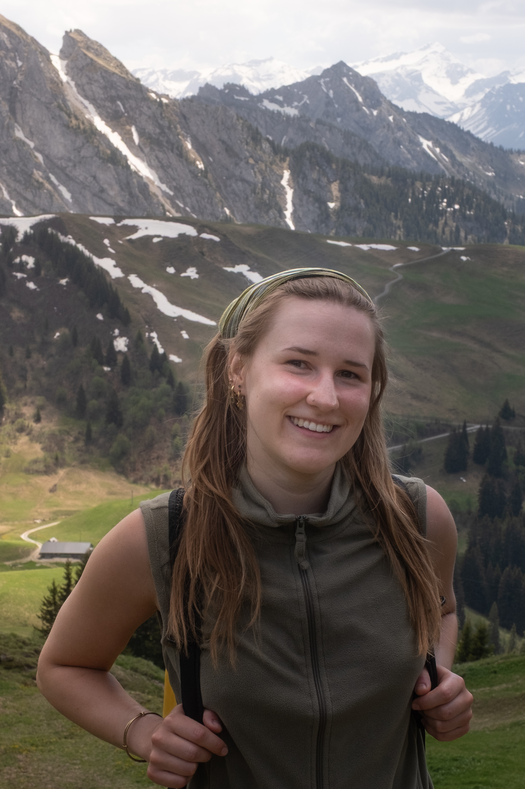

About me
I am a Master’s student in Biological Sciences at the University of Konstanz, specialising in Ecology, Evolution and Behaviour. My main interests lie in animal behaviour, primatology and the evolution of social cognition.
During my studies, I have gained practical experience in behavioural research, fieldwork and scientific data analysis. I have worked with chimpanzees, cheetahs, ants and marine organisms and have used methods such as behavioural coding, video analysis and machine-learning-based movement tracking.
I am especially interested in social behaviour, communication, cooperation and conflict resolution in primates. In the future, I would like to combine field research with scientific communication and visual storytelling.
Photography is another important part of my work. I enjoy documenting wildlife, landscapes, field research and everyday moments. Through photography, I aim to make science, nature and animal behaviour accessible to a wider audience.
